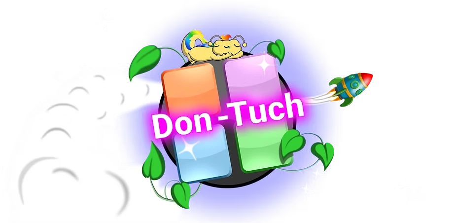

🚀 In Don-Tuch, embark on an exciting space adventure aboard a rocket traveling through a galaxy full of unique, themed planets waiting to be discovered.
🪐 Each planet features challenging levels that will test your focus and reflexes: tap the correct option to earn points and move forward.
🌱 As you complete each planet, you’ll receive a space plant that you must care for and help grow. You can also sell them to earn in-game coins.
🎮 Enjoy colorful graphics and simple yet addictive gameplay, perfect for all ages.